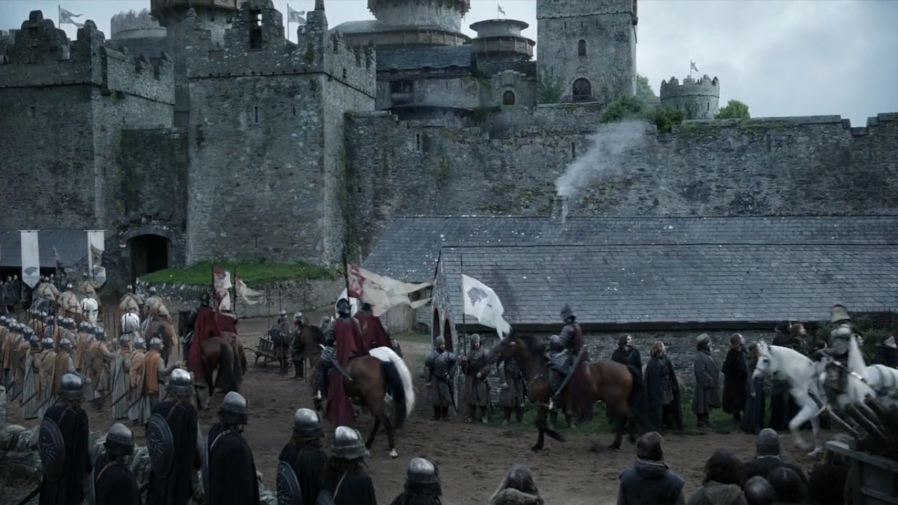
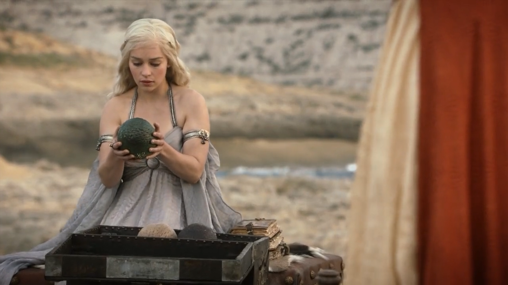

North of the Wall, a patrol of the cloistered Night's Watch order is ambushed by undead White Walkers. One of the men escapes south where, for his troubles, he is beheaded by the Lord of Winterfell Eddard Stark (Sean Bean).
Noble Ned dismisses the babblings about animated corpses and insists it is solemn duty to execute the deserter in person. However, traitorous soldiers are soon the least of his worries. Hundreds of miles to the south in King's Landing, "Hand of the King" Jon Arryn dies in mysterious circumstances. This is obviously bad news for Jon Arryn but opens a new career opportunity for Ned, as his old friend, King Robert Baratheon (Mark Addy), travels to Winterfell and offers to make the Warden of the North the new Hand of the King
Lena Headey as Cersei Lannister, Sean Bean as Ned Stark
Lena Headey as Cersei Lannister, Sean Bean as Ned Stark
There are a few sticking points. For one thing, Ned has no interest in becoming entangled in courtly intrigue at the capital. And Robert has brought with him his loathsome extended family. These include cruel Queen Cersei of the powerful House Lannister, her dashing but self-regarding twin Ser Jaime (Nikolaj Coster-Waldau) and their prostitute-fraternising sibling Tyrion (Peter Dinklage) .
Most unpleasant of all is Robert's ghastly son and heir Joffrey (Jack Gleeson) – literally a spoiled prince whose brattish temperament could not be more different from that of the garrulous, profane Robert (it's almost as if they are not related…).
Still, if things are bad for Ned – who resists Robert's offer but is made to understand he really doesn't have a choice – they are worse for his son Bran (Isaac Hempstead Wright). Climbing a tower, the adorable poppet happens upon Cersei canoodling with Jaime – yes, her twin!. "The things I do for love," sighs Jaime, shoving Bran out the window to his presumed death.
Somehow the boy survives – albeit crippled for life and in a temporary coma. While mother Catelyn sits by his bed, Ned, Robert and their retinues depart for King's Landing. With Ned are his daughters Sansa (flighty, fashion-conscious, bafflingly besotted with Joffrey) and feisty little Arya (Maisie Williams). Also saying farewell to the family home is Jon Snow, Ned's "bastard" son, openly loathed by Catelyn. He is to travel north to the Wall and join the semi-monastic Night's Watch, whose solemn is to guard the ancient rampart. Jon knows nothing of his mother and Ned vows to at last share the truth when next they meet (yes, one of them dies).
Across the Narrow Sea and far from the courtly scheming of Westeros, Princess Daenerys Targaryen is about to be married off to barbarian warlord Khal Drogo (Jason Momoa). A union between the wide-eyed, partially clothed Daenerys and the brutish Drogo has been arranged by the Princess's unpleasant (even by Prince Joffrey standards) brother Viserys (Harry Lloyd).
Emilia Clarke
Emilia Clarke
As the sole surviving children of the Mad King who once ruled Westeros – and was violently deposed by the Baratheons and Starks in "Robert's Rebellion” – Viserys believes the Iron Throne his to reclaim. Awkwardly he's wimpy, vain and lacks an army. Not much to be done about the first two – however, hitching Daenerys to Drogo will put at his disposal the Khal's Dothraki hordes and, all going to schedule, unleash the Targaryen "dragon".

Back in Westeros, new Hand of the King Ned is surprised when his wife Catelyn arrives at King's Landing. She has received a letter from her sister ( also Jon Arryn's widow) – claiming the Lannisters killed Ned's predecessor (Catelyn believes they later dispatched the assassin who unsuccessfully attempt to finish off stricken Bran).
Mark Addy as Robert Baratheon
Mark Addy as Robert Baratheon
Alas, the Starks are about to lose a crucial ally. Robert, a serial philander in a sham marriage with Cersei, dies during a boar hunt, with his wife having apparently drugged his wine.
This is unfortunate timing as Ned has discovered that Joffrey isn't Robert's biological son. Confronted, Cersei admits Jaime is the father of all her children. But naive Ned has underestimated his enemies. With Joffrey to be King, Eddard is arrested for treachery and executed – in view of daughters Sansa (in a be-careful-what-you-wish-for twist she is now betrothed to loathsome Joffrey) and Arya, watching in disguise before fleeing for her life.
Khal Drogo
In Essos, Daenerys surprises herself by taking to the life of a Khal's wife. Also surprised is Viserys. No longer in control his sister he is executed by the Dothraki (big fans of dramatic irony, the horsemen pour a "crown" of molten gold over on his head).
Yet the lot of a blood-thirsty warlord can be challenging and Khal sustains fatal wounds in battle. Into his funeral bonfire steps Daenerys with the three dragon eggs she received as a wedding gift. She emerges unharmed – this being Game of Thrones her clothes obviously aren't so lucky – while the eggs have hatched into baby dragons.